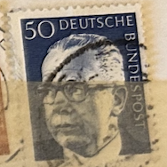
| SOURCE | TITLE| IMAGE MATCH | click to source page |
| HipStamp | Germany Scott 1035 used 1970-1973 President Heinemann stamp | Europe - Germany & Colonies - Germany, General Issue Stamp / HipStamp |  |
| Alamy | Postage stamp from the Federal Republic of Germany in the Federal President Dr. Gustav Heinemann series issued in 1971 Stock Photo - Alamy |  |
| eBay | EBS Germany 1970-1971 - Heinemann (I) - Michel 635-645 - MNH** - cv $19.00 | eBay | 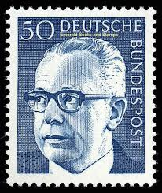 |
| eBay | West Germany - 1971 - Gustav Heinemann - New Value - 60Pfg - Used - #07 | eBay | 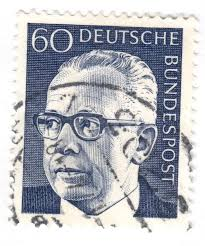 |
| eBay UK | 🇩🇪 GERMANY 50 Pfennig Deutsche Stamp : President Dr Heinemann SG DE 1541 | eBay UK | 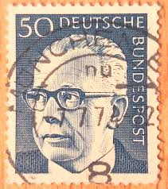 |
| eBay | 8 Number Postage European Stamps for sale | eBay |  |
| Poppe Stamps | Poppe Stamps: German Federal Republic, 1970, 1541, Presidents - stamps for sale by theme and country | 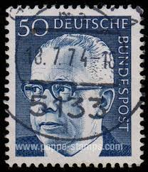 |
| Dreamstime.com | GERMANY - CIRCA 1971 : a Postage Stamp from Germany, Showing a Portrait of the Politician and Federal President Gustav Heinemann Editorial Stock Photo - Image of federal, leadership: 215685178 | 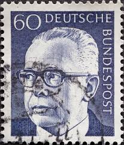 |
| Poppe Stamps | Poppe Stamps: German Federal Republic, 1970, 1541, Presidents - stamps for sale by theme and country | 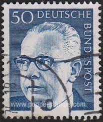 |
| Todocolección | 300 sellos de alemania federal industria y técn - Buy Antique stamps of Germany on todocoleccion | 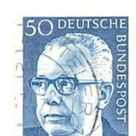 |
| Alamy | Postage stamp printed by Germany, that shows Silesian metallurgical plants, circa 1920 Stock Photo - Alamy | 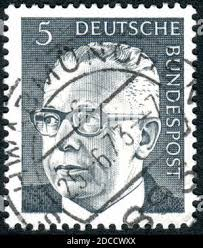 |
| Poppe Stamps | Poppe Stamps: German Federal Republic, 1970, 1541, Presidents - stamps for sale by theme and country | 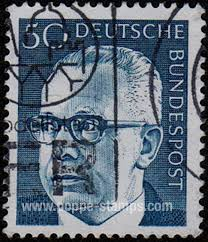 |
| allnumis.com | 50 Pfennig 1971, People - Personalities-man - Germany - Stamp - 51387 | 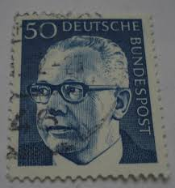 |
| Alamy | GERMANY - CIRCA 1970: a stamp printed in the Germany shows Welder, Industrial Protection, circa 1970 Stock Photo - Alamy | 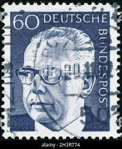 |
| eBay | Germany and Colonies Politicians Stamps for sale | eBay | 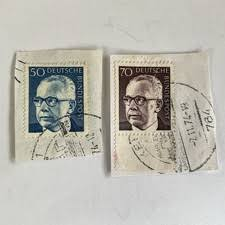 |
| iStock | Former German President On An Old Stamp Stock Photo - Download Image Now - Gustav Heinemann, 1971, Black Background - iStock | 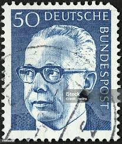 |
| Shutterstock | 2+ Thousand Deutsche Bundespost Royalty-Free Images, Stock Photos & Pictures | Shutterstock | 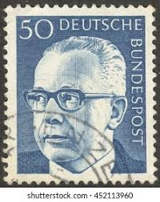 |
| Shutterstock | 22 Gustav Third Royalty-Free Images, Stock Photos & Pictures | Shutterstock | 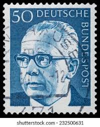 |
| Alamy | Photo of a German postage stamp with an illustration of Federal President Dr Gustav Heinemann 1970 Stock Photo - Alamy | 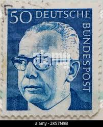 |
| Dreamstime.com | Isolated German Polizei Logo in Front of Police Station Against Blue Sky Editorial Photography - Image of sign, close: 178790062 |  |
| Todocolección | alemania - tercer reich - hindenburg 4 pfennig - Compra venta en todocoleccion | 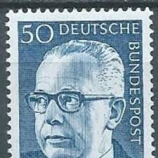 |
| Alamy | 50 pfennig hi-res stock photography and images - Alamy | 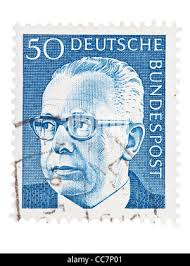 |
| Shutterstock | Dark Postal Stamp: Over 1,351 Royalty-Free Licensable Stock Photos | Shutterstock | 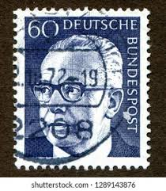 |
| sellosmundo.com | Stamp: DEUTSCHE BUNDESPOST 20 VERDEof Germany Europe* | 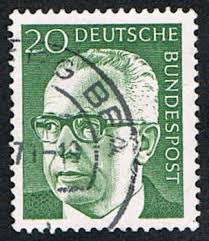 |
| HipStamp | Germany 1029 USED | Europe - Germany & Colonies - Germany, General Issue Stamp / HipStamp | 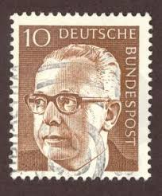 |
| Alamy | Stamp printed in ddr shows hi-res stock photography and images - Alamy | 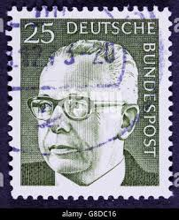 |
| Alamy | German President Gustav Heinemann (M, on microphone) and his wife Hilda (red dress) at the Festival Plaza of the Expo '70 during the ceremony on the occasion of the German Day on | 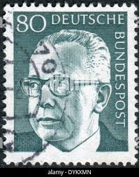 |
| Shutterstock | Circa Germany West: Over 1,138 Royalty-Free Licensable Stock Photos | Shutterstock | 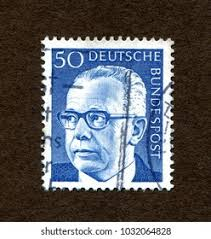 |
| Dreamstime.com | Gustav Heinemann, President of the Federal Republic of Germany Editorial Stock Image - Image of philatelic, philately: 177916989 |  |
| iStock | Former German President On An Old Stamp Stock Photo - Download Image Now - 1971, Black Background, Black Color - iStock |  |
| Shutterstock | Gustav Heinemann 3rd Federal President Germany Stock Photo 2645205681 | Shutterstock | 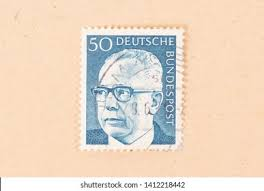 |
| Colnect | Germany, Federal Republic : Stamps [Year: 1973] [1/9] : Colnect 📮 | 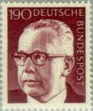 |
| Dreamstime.com | The People at Heinemann Duty Free Shop Inside of Frankfurt am Main Airport, Germany Editorial Image - Image of business, hall: 252907080 | 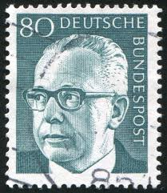 |
| Alamy | Gustav Heinemann Portrait German President Federal Republic Democracy Heritage Gray! This elegant German definitive stamp issued 1970-1971 by the Deut Stock Photo - Alamy | 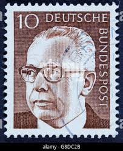 |
| Find Your Stamps Value | Value of deutsche bundespost berlin stamps | 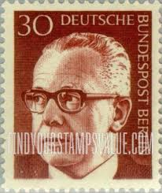 |
| HipStamp | Germany #1030A Single Used | Europe - Germany & Colonies - Germany, General Issue Stamp / HipStamp | 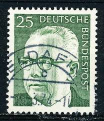 |
| Alamy | 5 pfennig stamp hi-res stock photography and images - Alamy |  |
| Shutterstock | deutsche_post": Over 5,977 Royalty-Free Licensable Stock Photos | Shutterstock | 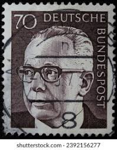 |
| Shutterstock | Deutsche bundespost : résultats (961) d'images libres de droits, de photos de stock et d'illustrations | Shutterstock | 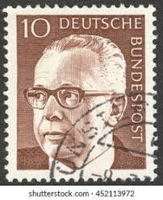 |
| Alamy | Bundes president hi-res stock photography and images - Alamy | 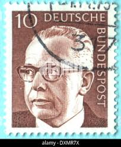 |
| Dreamstime.com | Old Doctor Olive Oil Stock Photos - Free & Royalty-Free Stock Photos from Dreamstime | 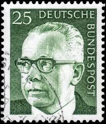 |
| Shutterstock | 19+ Thousand German Post Stamp Royalty-Free Images, Stock Photos & Pictures | Shutterstock |  |
| iStock | Gustav Heinemann Stock Photo - Download Image Now - Adult, Adults Only, Black Background - iStock |  |
| Dreamstime.com | Portrait President Dwight David Eisenhower Editorial Stock Image - Image of david, collect: 217676514 | 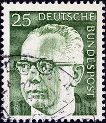 |
| Poppe Stamps | Poppe Stamps: German Federal Republic, 1970, 1553, Presidents - stamps for sale by theme and country | 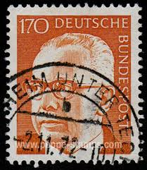 |
| Dreamstime.com | Gustav Heinemann, 3rd Federal President of Germany. Editorial Photography - Image of stamp, history: 388843222 |  |
| Dreamstime.com | 147 Turkey 1970 Stock Photos - Free & Royalty-Free Stock Photos from Dreamstime |  |
| Shutterstock | Stamp Prize: Over 2,596 Royalty-Free Licensable Stock Photos | Shutterstock | 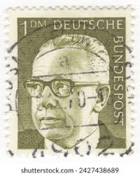 |
| Alamy | Postman germany hi-res stock photography and images - Page 11 - Alamy | 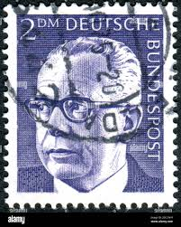 |
| Mystic Stamp Company | 1031-32 - 1971 Germany - Mystic Stamp Company | 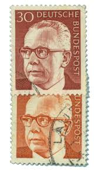 |
| eBay | BRD FRG #Mi636 MNH 1970 Gustav Heinemann President [1029 YT506 SG1536] | eBay | 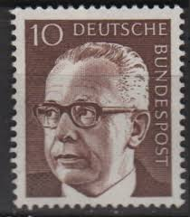 |
| Alamy | Influential political intellectual hi-res stock photography and images - Alamy | 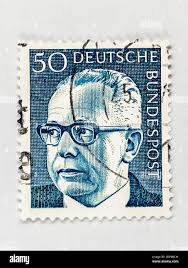 |
| eBay | GERMANY 1038A - President Gustav Heinemann "1973 Olive Grey" (pc14377) | eBay |  |
| eBay | GERMANY WEST DEUTSCHE BUNDESPOST 1970 GUSTAV HEINEMANN 50 BLUE - USED TKS206* | eBay | 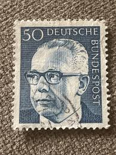 |
| eBay | GERMANY 1039 - President Gustav Heinemann "1972 Ocher" (pc14379) | eBay | 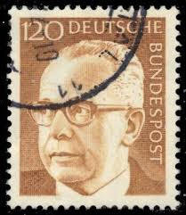 |
| eBay | Briefmarke Deutsche Bundespost 5 Pfennig Heinemann Gestempelt Wanne - Eickel | eBay | 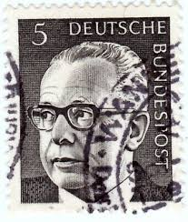 |
| eBay | Germany 1971 50pf PRESIDENT GUSTAV HEINEMANN MNH SC 1033 | eBay | 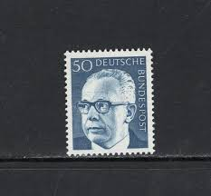 |
| eBay | BERLIN 9N286A - President Gustav Heinemann "1972 Olive" (pc17762) | eBay |  |
| Shutterstock | Karnal Haryana India -august 5th 2025-closeup Stock Photo 2671225935 | Shutterstock |  |